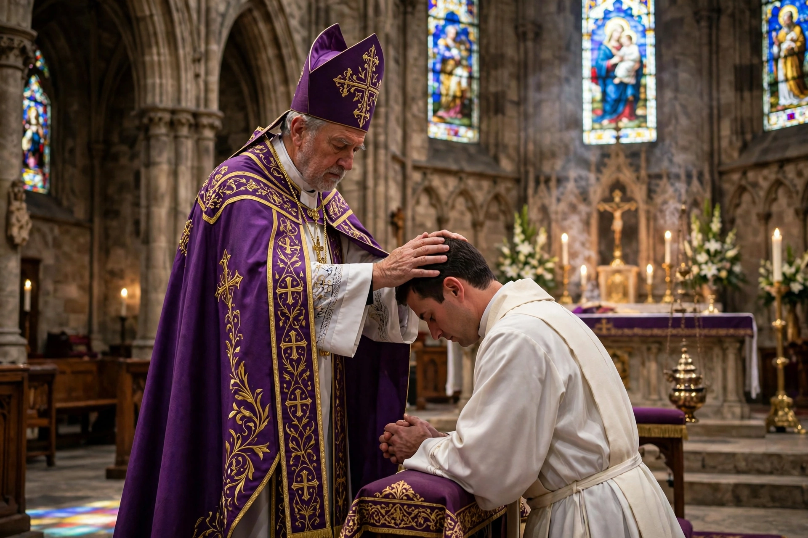

Apostolic succession is the method whereby the ministry of the Christian Church is held to be derived from the apostles by a continuous succession, which has usually been associated with a claim that the succession is through a series of bishops. Those in this line of succession are consecrated by other bishops already in the line, traditionally through the laying on of hands. Churches that claim some type of episcopal apostolic succession — historical or doctrinal — include the Roman Catholic, Eastern Orthodox, Oriental Orthodox, Church of the East, Anglican, and many Lutheran churches.

The doctrine holds that the authority given by Christ to the apostles — to preach, sanctify, and govern — is transmitted to their successors, the bishops, securing the continuity of apostolic teaching and the validity of the sacraments, especially the Eucharist and ordination. Irenaeus of Lyons argued in the second century that the public succession lists of bishops in the great sees demonstrated the preservation of apostolic doctrine against heretical innovation.
The Roman Catholic Church teaches that valid episcopal consecration requires a bishop in the apostolic line acting with proper form and intention. The Eastern Orthodox Church holds a similar understanding, emphasizing also right faith and communion. Anglicans retained the historic episcopate through the Reformation, though the Catholic Church declared Anglican orders "absolutely null and utterly void" in the bull Apostolicae curae (1896), a judgment Anglicans dispute. Many Lutheran churches in Scandinavia preserved episcopal succession; others understand apostolic succession primarily as succession in apostolic doctrine. Most other Protestant traditions emphasize the succession of the faith (the "apostolicity" of teaching) rather than an unbroken tactile line of ordinations.